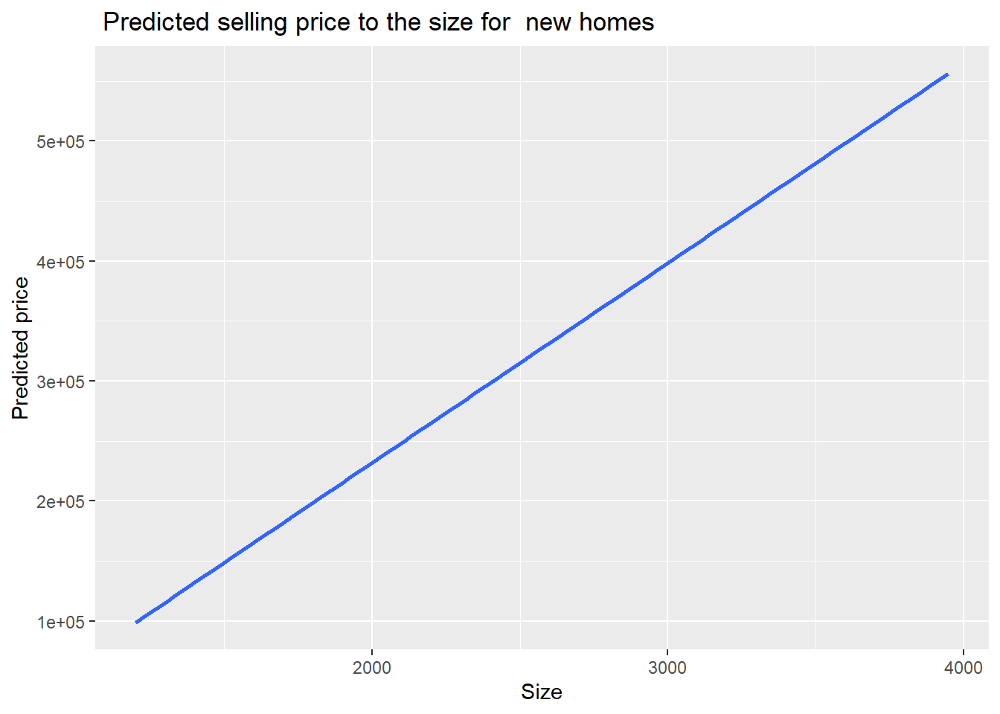
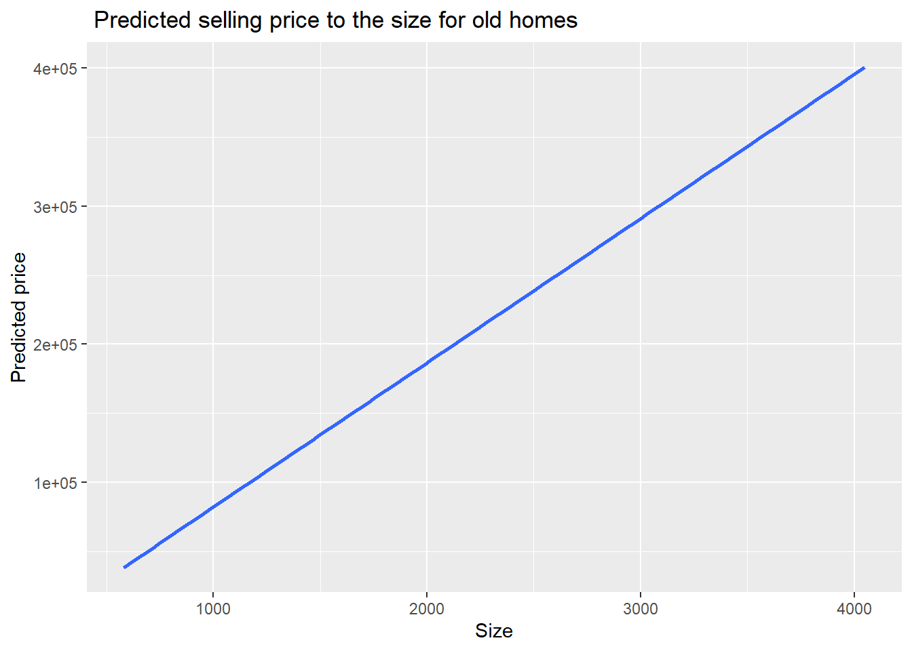

The following objects are masked from 'package:stats':
filter, lag
The following objects are masked from 'package:base':
intersect, setdiff, setequal, union
library(ggplot2)library(alr4)
Loading required package: car
Loading required package: carData
Attaching package: 'car'
The following object is masked from 'package:dplyr':
recode
Loading required package: effects
lattice theme set by effectsTheme()
See ?effectsTheme for details.
library(smss)data(UN11)
Question 1
For recent data in Jacksonville, Florida, on y = selling price of home (in dollars), x1 = size of home (in square feet), and x2 = lot size (in square feet), the prediction equation is ŷ = −10,536 + 53.8x1 + 2.84x2.
A. A particular home of 1240 square feet on a lot of 18,000 square feet sold for $145,000. Find the predicted selling price and the residual, and interpret.
B. For fixed lot size, how much is the house selling price predicted to increase for each square- foot increase in home size? Why?
C. According to this prediction equation, for fixed home size, how much would lot size need to increase to have the same impact as a one-square-foot increase in home size?
The residual is negative, meaning that the model underestimated house price.
B.
ŷ = −10,536 + 53.8x1 + 2.84x2. If X2 is fixed, Y increases by 53.8 dollars per each square foot increase. The coeeficient of X1 indicates increase in Y with the change of X1, if the other variables kept the same.
C.
To increase Y by 53.8, X2 would need to increase by 53.8/2.84 = 8.94366.
x2.incr<-53.8/2.84x2.incr
[1] 18.94366
Question 2
(Data file: salary in alr4 R package). The data file concerns salary and other characteristics of all faculty in a small Midwestern college collected in the early 1980s for presentation in legal proceedings for which discrimination against women in salary was at issue. All persons in the data hold tenured or tenure track positions; temporary faculty are not included. The variables include degree, a factor with levels PhD and MS; rank, a factor with levels Asst, Assoc, and Prof; sex, a factor with levels Male and Female; Year, years in current rank; ysdeg, years since highest degree, and salary, academic year salary in dollars.
A.
Test the hypothesis that the mean salary for men and women is the same, without regard to any other variable but sex. Explain your findings.
First, I will make sure that variances in male and female groups are equal:
salary$sex
[1] Male Male Male Female Male Male Female Male Male Male
[11] Male Male Male Male Male Male Male Male Male Male
[21] Male Male Male Female Male Male Male Female Male Male
[31] Female Male Male Female Female Male Female Male Male Male
[41] Male Male Male Female Male Male Female Female Male Female
[51] Female Female
Levels: Male Female
Male <-subset(salary, sex =="Male")Female<-subset(salary, sex =="Female")var.test(Male$salary, Female$salary)
F test to compare two variances
data: Male$salary and Female$salary
F = 0.84242, num df = 37, denom df = 13, p-value = 0.6525
alternative hypothesis: true ratio of variances is not equal to 1
95 percent confidence interval:
0.3015275 1.9189474
sample estimates:
ratio of variances
0.8424225
P>0.05 means that the variances of thwo samples can be considered equal.
salary$sex
[1] Male Male Male Female Male Male Female Male Male Male
[11] Male Male Male Male Male Male Male Male Male Male
[21] Male Male Male Female Male Male Male Female Male Male
[31] Female Male Male Female Female Male Female Male Male Male
[41] Male Male Male Female Male Male Female Female Male Female
[51] Female Female
Levels: Male Female
Male <-subset(salary, sex =="Male")Female<-subset(salary, sex =="Female")t.test(Male$salary, Female$salary, var.equal=T, Alternative="two.soded")
Two Sample t-test
data: Male$salary and Female$salary
t = 1.8474, df = 50, p-value = 0.0706
alternative hypothesis: true difference in means is not equal to 0
95 percent confidence interval:
-291.257 6970.550
sample estimates:
mean of x mean of y
24696.79 21357.14
The p-value of a t-test is above 0.05, which means that we accept H0 that the means of these two groups ere the same.
B.
Run a multiple linear regression with salary as the outcome variable and everything else as predictors, including sex. Assuming no interactions between sex and the other predictors, obtain a 95% confidence interval for the difference in salary between males and females.
summary ( lm(salary ~ degree + rank + sex + year +ysdeg , data = salary ))
Call:
lm(formula = salary ~ degree + rank + sex + year + ysdeg, data = salary)
Residuals:
Min 1Q Median 3Q Max
-4045.2 -1094.7 -361.5 813.2 9193.1
Coefficients:
Estimate Std. Error t value Pr(>|t|)
(Intercept) 15746.05 800.18 19.678 < 2e-16 ***
degreePhD 1388.61 1018.75 1.363 0.180
rankAssoc 5292.36 1145.40 4.621 3.22e-05 ***
rankProf 11118.76 1351.77 8.225 1.62e-10 ***
sexFemale 1166.37 925.57 1.260 0.214
year 476.31 94.91 5.018 8.65e-06 ***
ysdeg -124.57 77.49 -1.608 0.115
---
Signif. codes: 0 '***' 0.001 '**' 0.01 '*' 0.05 '.' 0.1 ' ' 1
Residual standard error: 2398 on 45 degrees of freedom
Multiple R-squared: 0.855, Adjusted R-squared: 0.8357
F-statistic: 44.24 on 6 and 45 DF, p-value: < 2.2e-16
Confidence interval for the difference in salary between males and females:
confint(model, "sexMale", level =0.95)
Error in confint(model, "sexMale", level = 0.95): object 'model' not found
C.
Interpret your finding for each predictor variable; discuss (a) statistical significance, (b) interpretation of the coefficient / slope in relation to the outcome variable and other variables
summary ( lm(salary ~ degree + rank + sex + year +ysdeg , data = salary ))
Call:
lm(formula = salary ~ degree + rank + sex + year + ysdeg, data = salary)
Residuals:
Min 1Q Median 3Q Max
-4045.2 -1094.7 -361.5 813.2 9193.1
Coefficients:
Estimate Std. Error t value Pr(>|t|)
(Intercept) 15746.05 800.18 19.678 < 2e-16 ***
degreePhD 1388.61 1018.75 1.363 0.180
rankAssoc 5292.36 1145.40 4.621 3.22e-05 ***
rankProf 11118.76 1351.77 8.225 1.62e-10 ***
sexFemale 1166.37 925.57 1.260 0.214
year 476.31 94.91 5.018 8.65e-06 ***
ysdeg -124.57 77.49 -1.608 0.115
---
Signif. codes: 0 '***' 0.001 '**' 0.01 '*' 0.05 '.' 0.1 ' ' 1
Residual standard error: 2398 on 45 degrees of freedom
Multiple R-squared: 0.855, Adjusted R-squared: 0.8357
F-statistic: 44.24 on 6 and 45 DF, p-value: < 2.2e-16
degree: shows no significance in the model (p-value is above 0.05), meaning that this variable cannot explain or predict salary. Rank variable shows high level of significance for all of its three levels (p-value lower than 0.0001), meaning that the rank influences the salary. The rank of the professor increases the salary twice more than the rank of the Associate professor.
Sex variable with two levels (male and female) has no significance and therefore does not contribute to the salary value.
Year shows high significance (low p-value), but has the lowest coefficient to the salary value.
Ysdeg shows no significance and therefore does not contribute to the salary.
D.
Change the baseline category for the rank variable. Interpret the coefficients related to rank again.
salary$rank <-relevel(salary$rank, ref ="Prof")summary ( lm(salary ~ degree + rank + sex + year +ysdeg , data = salary ))
Call:
lm(formula = salary ~ degree + rank + sex + year + ysdeg, data = salary)
Residuals:
Min 1Q Median 3Q Max
-4045.2 -1094.7 -361.5 813.2 9193.1
Coefficients:
Estimate Std. Error t value Pr(>|t|)
(Intercept) 26864.81 1375.29 19.534 < 2e-16 ***
degreePhD 1388.61 1018.75 1.363 0.180
rankAsst -11118.76 1351.77 -8.225 1.62e-10 ***
rankAssoc -5826.40 1012.93 -5.752 7.28e-07 ***
sexFemale 1166.37 925.57 1.260 0.214
year 476.31 94.91 5.018 8.65e-06 ***
ysdeg -124.57 77.49 -1.608 0.115
---
Signif. codes: 0 '***' 0.001 '**' 0.01 '*' 0.05 '.' 0.1 ' ' 1
Residual standard error: 2398 on 45 degrees of freedom
Multiple R-squared: 0.855, Adjusted R-squared: 0.8357
F-statistic: 44.24 on 6 and 45 DF, p-value: < 2.2e-16
I used relevel() function tochange base cathegory for Rank from Asssistant to Professor. Now we can see that ssostant professor earns on average $11118 less than professor, and Associate makes $5826 less than professor.
E.
Finkelstein (1980), in a discussion of the use of regression in discrimination cases, wrote, “[a] variable may reflect a position or status bestowed by the employer, in which case if there is discrimination in the award of the position or status, the variable may be ‘tainted.’” Thus, for example, if discrimination is at work in promotion of faculty to higher ranks, using rank to adjust salaries before comparing the sexes may not be acceptable to the courts.
Exclude the variable rank, refit, and summarize how your findings changed, if they did.
# first, I return value "Asst" to be baseline, because it has smallest salaries. levels(salary$rank)
[1] "Prof" "Asst" "Assoc"
salary$rank <-relevel(salary$rank, ref ="Asst")#excluding rank from the model summary ( lm(salary ~ degree + sex + year +ysdeg , data = salary ))
Call:
lm(formula = salary ~ degree + sex + year + ysdeg, data = salary)
Residuals:
Min 1Q Median 3Q Max
-8146.9 -2186.9 -491.5 2279.1 11186.6
Coefficients:
Estimate Std. Error t value Pr(>|t|)
(Intercept) 17183.57 1147.94 14.969 < 2e-16 ***
degreePhD -3299.35 1302.52 -2.533 0.014704 *
sexFemale -1286.54 1313.09 -0.980 0.332209
year 351.97 142.48 2.470 0.017185 *
ysdeg 339.40 80.62 4.210 0.000114 ***
---
Signif. codes: 0 '***' 0.001 '**' 0.01 '*' 0.05 '.' 0.1 ' ' 1
Residual standard error: 3744 on 47 degrees of freedom
Multiple R-squared: 0.6312, Adjusted R-squared: 0.5998
F-statistic: 20.11 on 4 and 47 DF, p-value: 1.048e-09
Once I excluded rank from the model, the variable sex became significant. I interpret it, as the variable rank was taking “covering” variable sex. It the previous model rank had very high significance, and now “sex” became significant, supporting Finkelstein’s hypothesis.
F.
Everyone in this dataset was hired the year they earned their highest degree.
ysdeg = time since hired
It is also known that a new Dean was appointed 15 years ago, and everyone in the dataset who earned their highest degree 15 years ago or less than that has been hired by the new Dean.
separate thos who been hired by him ysdeg <=15 yrs - > two groups compare
Some people have argued that the new Dean has been making offers that are a lot more generous to newly hired faculty than the previous one and that this might explain some of the variation in Salary.
Create a new variable that would allow you to test this hypothesis and run another multiple regression model to test this.
Select variables carefully to make sure there is no multicollinearity.
Explain why multicollinearity would be a concern in this case and how you avoided it.
Do you find support for the hypothesis that the people hired by the new Dean are making higher than those that were not?
# ysdeg = time since hiredsalary<-salary%>%mutate (new.hire =ifelse (ysdeg >15, 0, 1))
Since new.hire variable is derived from ysdeg, I will remove ysdeg from the model to avoid multicollinearity:
summary ( lm(salary ~ degree + sex + rank + year + new.hire, data = salary ))
Call:
lm(formula = salary ~ degree + sex + rank + year + new.hire,
data = salary)
Residuals:
Min 1Q Median 3Q Max
-3403.3 -1387.0 -167.0 528.2 9233.8
Coefficients:
Estimate Std. Error t value Pr(>|t|)
(Intercept) 13328.38 1483.38 8.985 1.33e-11 ***
degreePhD 818.93 797.48 1.027 0.3100
sexFemale 907.14 840.54 1.079 0.2862
rankProf 11096.95 1191.00 9.317 4.54e-12 ***
rankAssoc 4972.66 997.17 4.987 9.61e-06 ***
year 434.85 78.89 5.512 1.65e-06 ***
new.hire 2163.46 1072.04 2.018 0.0496 *
---
Signif. codes: 0 '***' 0.001 '**' 0.01 '*' 0.05 '.' 0.1 ' ' 1
Residual standard error: 2362 on 45 degrees of freedom
Multiple R-squared: 0.8594, Adjusted R-squared: 0.8407
F-statistic: 45.86 on 6 and 45 DF, p-value: < 2.2e-16
# old summary ( lm(salary ~ degree + sex + year +ysdeg , data = salary ))
The model is showing significance for the new.hire variable, supporting the hypothesis tha tpeople hired by the new Dean are paid better.
Question 3
(Data file: house.selling.price in smss R package)
data(house.selling.price)
A.
Using the house.selling.price data, run and report regression results modeling y = selling price (in dollars) in terms of size of home (in square feet) and whether the home is new (1 = yes; 0 = no). In particular, for each variable; discuss statistical significance and interpret the meaning of the coefficient.
summary (lm(Price~ Size + New, data = house.selling.price))
Call:
lm(formula = Price ~ Size + New, data = house.selling.price)
Residuals:
Min 1Q Median 3Q Max
-205102 -34374 -5778 18929 163866
Coefficients:
Estimate Std. Error t value Pr(>|t|)
(Intercept) -40230.867 14696.140 -2.738 0.00737 **
Size 116.132 8.795 13.204 < 2e-16 ***
New 57736.283 18653.041 3.095 0.00257 **
---
Signif. codes: 0 '***' 0.001 '**' 0.01 '*' 0.05 '.' 0.1 ' ' 1
Residual standard error: 53880 on 97 degrees of freedom
Multiple R-squared: 0.7226, Adjusted R-squared: 0.7169
F-statistic: 126.3 on 2 and 97 DF, p-value: < 2.2e-16
The model is demostrating statisticsl significance of both independent variable, with the size variable having a better significance level. Size coefficient of 115 indicates that with an increase of size by square foot, the price of the house would increase by 116 dollars.
At the same time, the coefficient of “New” variable is much bgger than Size, meaning that the the new house would be 57736 dollars more expencive than the old one of the same size.
B.
Report and interpret the prediction equation, and form separate equations relating selling price to size for new and for not new homes.
C. Find the predicted selling price for a home of 3000 square feet that is (i) new, (ii) not new.
New house of size 3000
Size<-3000new.house<-166*Size new.house
[1] 498000
Old house of size 3000
old.house <-104*Sizeold.house
[1] 312000
D. Fit another model, this time with an interaction term allowing interaction between size and new, and report the regression results
summary (lm(Price~ Size + New +Size*New, data = house.selling.price))
Call:
lm(formula = Price ~ Size + New + Size * New, data = house.selling.price)
Residuals:
Min 1Q Median 3Q Max
-175748 -28979 -6260 14693 192519
Coefficients:
Estimate Std. Error t value Pr(>|t|)
(Intercept) -22227.808 15521.110 -1.432 0.15536
Size 104.438 9.424 11.082 < 2e-16 ***
New -78527.502 51007.642 -1.540 0.12697
Size:New 61.916 21.686 2.855 0.00527 **
---
Signif. codes: 0 '***' 0.001 '**' 0.01 '*' 0.05 '.' 0.1 ' ' 1
Residual standard error: 52000 on 96 degrees of freedom
Multiple R-squared: 0.7443, Adjusted R-squared: 0.7363
F-statistic: 93.15 on 3 and 96 DF, p-value: < 2.2e-16
Once we added interaction term between New and size, the significance of “New” variable disappeared. Instead, the interaction term appears to explain the change in price better, i.e. combination of size and newness of the house impacts the price.
E. Report the lines relating the predicted selling price to the size for homes that are (i) new, (ii) not new.
house.selling.price<- house.selling.price%>%mutate (predicted.price =predict(lm(Price~ Size + New +Size*New)))new.houses<- house.selling.price%>%filter(New==1)ggplot(new.houses, mapping=aes(x=Size, y=predicted.price))+geom_smooth(method="lm")+labs(title=" Predicted selling price to the size for new homes", x="Size", y="Predicted price")
`geom_smooth()` using formula = 'y ~ x'

old.houses<- house.selling.price%>%filter(New==0)ggplot(old.houses, mapping=aes(x=Size, y=predicted.price))+geom_smooth(method="lm")+labs(title=" Predicted selling price to the size for old homes", x="Size", y="Predicted price")
`geom_smooth()` using formula = 'y ~ x'

F. Find the predicted selling price for a home of 3000 square feet that is (i) new, (ii) not new.
New:
model <-lm(Price~ Size + New +Size*New, data = house.selling.price)predicted1.y.new <-predict(model, newdata =data.frame(Size =3000, New =1))predicted1.y.new
1
398307.5
Old:
predicted1.y.old <-predict(model, newdata =data.frame(Size =3000, New =0))predicted1.y.old
1
291087.4
G. Find the predicted selling price for a home of 1500 square feet that is (i) new, (ii) not new. Comparing to (F), explain how the difference in predicted selling prices changes as the size of home increases.
predicted2.y.new <-predict(model, newdata =data.frame(Size =1500, New =1))predicted2.y.new
1
148776.1
predicted2.y.old <-predict(model, newdata =data.frame(Size =1500, New =0))predicted2.y.old
1
134429.8
The difference in prices between old and new house for F (3000sq.f) is
dif.1<- predicted1.y.new -predicted1.y.old dif.1
1
107220.1
The difference in prices between old and new house for G (1500sq.f) is
dif.2<- predicted2.y.new -predicted2.y.old dif.2
1
14346.32
Apparently the difference between old and new houses of the same square footage is increasing with increase of size.
H. Do you think the model with interaction or the one without it represents the relationship of size and new to the outcome price? What makes you prefer one model over another?
Clearly the model with interaction represents relationship better, because difference in prices of larger houses is bigger than difference in prices for smaller houses.